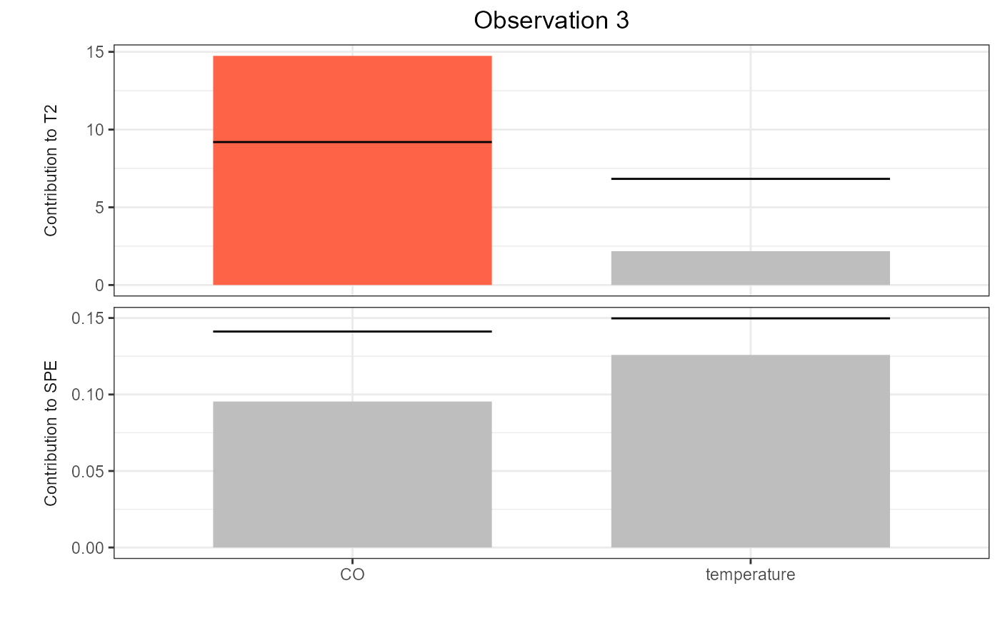

This function produces a contribution plot from functional control charts for a given observation of a phase II data set, using ggplot.
cont_plot(cclist, id_num, which_plot = c("T2", "spe"), print_id = FALSE)A data.frame produced by
control_charts_pca, control_charts_sof_pc
regr_cc_fof, or regr_cc_sof.
An index number giving the observation in the phase II data set to be plotted, i.e. 1 for the first observation, 2 for the second, and so on.
A character vector. Each value indicates which contribution you want to plot:
"T2" indicates contribution to the Hotelling's T^2 statistic,
"spe" indicates contribution to the squared prediction error statistic.
A logical value, if TRUE, it prints also the id of the observation in the title of the ggplot. Default is FALSE.
A ggplot containing the contributions of functional variables to the monitoring statistics. Each plot is a bar plot, with bars corresponding to contribution values and horizontal black segments denoting corresponding (empirical) upper limits. Bars are coloured by red if contributions exceed their limit.
library(funcharts)
data("air")
air <- lapply(air, function(x) x[201:300, , drop = FALSE])
fun_covariates <- c("CO", "temperature")
mfdobj_x <- get_mfd_list(air[fun_covariates],
n_basis = 15,
lambda = 1e-2)
y <- rowMeans(air$NO2)
y1 <- y[1:60]
y2 <- y[91:100]
mfdobj_x1 <- mfdobj_x[1:60]
mfdobj_x_tuning <- mfdobj_x[61:90]
mfdobj_x2 <- mfdobj_x[91:100]
mod <- sof_pc(y1, mfdobj_x1)
cclist <- control_charts_sof_pc(mod = mod,
y_test = y2,
mfdobj_x_test = mfdobj_x2,
mfdobj_x_tuning = mfdobj_x_tuning)
get_ooc(cclist)
#> id T2 spe y contribution_T2_CO contribution_T2_temperature
#> 91 91 FALSE FALSE FALSE FALSE FALSE
#> 92 92 FALSE FALSE FALSE FALSE FALSE
#> 93 93 TRUE FALSE FALSE TRUE FALSE
#> 94 94 FALSE FALSE FALSE FALSE FALSE
#> 95 95 FALSE FALSE FALSE FALSE FALSE
#> 96 96 FALSE FALSE FALSE FALSE FALSE
#> 97 97 FALSE FALSE FALSE FALSE FALSE
#> 98 98 FALSE FALSE FALSE FALSE FALSE
#> 99 99 FALSE FALSE TRUE FALSE FALSE
#> 100 100 FALSE FALSE TRUE FALSE FALSE
#> contribution_spe_CO contribution_spe_temperature
#> 91 FALSE FALSE
#> 92 FALSE FALSE
#> 93 FALSE FALSE
#> 94 FALSE FALSE
#> 95 FALSE FALSE
#> 96 FALSE FALSE
#> 97 FALSE FALSE
#> 98 FALSE FALSE
#> 99 FALSE FALSE
#> 100 FALSE FALSE
cont_plot(cclist, 3)
